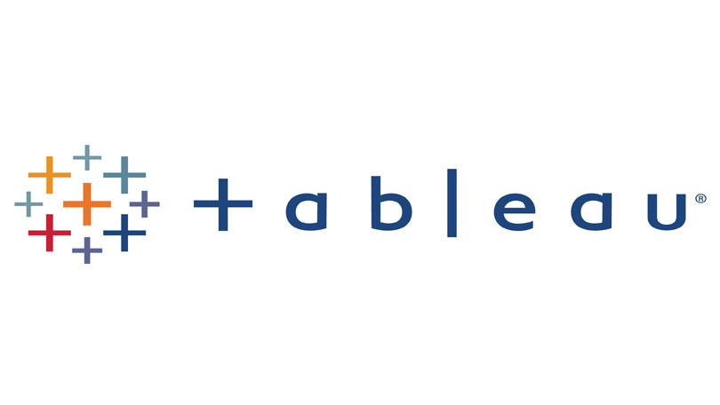

This project used Python to extract pricing data from Amazon listings.
Libraries such as BeautifulSoup and pandas automated the collection of product details,
prices, and ratings over time.
The scraped data was then analyzed to identify pricing trends and fluctuations for various
products.
Insights gained provided a deeper understanding of how external factors may influence online
retail pricing strategies.
This Python project demonstrated how to access and work with an external API to gather cryptocurrency information, perform ETL processes on the raw data, and generate useful insights through data analysis and visualization techniques in Python.
The range of tasks covered many common steps involved in an exploratory data analysis project.
This Power BI project developed an interactive dashboard to provide insights into a survey of data professionals.
Key Power BI capabilities like Power Query, DAX measures, data relationship modeling, and native visualizations (such as column charts, line charts, pie charts, donut charts, maps, and card visuals) were utilized to transform and analyze the CSV data, enable visualization filtering and drill downs, showcase perspectives, and design the dashboard visually.
Features such as conditional formatting and bins further enhanced visual arrangement within the Power BI desktop editor and service.
This project utilizes SQL Server to explore and visualize international COVID-19 data.
Various queries examine infection rates, mortality risks, vaccination percentages and other
metrics.
Advanced SQL features streamline data preparation to glean insights on the global spread and
severity of the pandemic.

This project demonstrates key data cleaning techniques including standardizing dates, handling
missing values, and transforming fields.
SQL queries are used to preprocess the raw Nashville Housing data for analysis.

This project explored and visualized Airbnb listing data in the United States.
Maps, graphs and interactive filters were used to examine factors such as regional prices,
revenue seasonality, and property attributes.
Advanced charts facilitated insights into tourism patterns and the shared economy market.
This interactive Tableau story was published online for broader insights.

This project utilized Excel's built-in features to explore and visualize bike sales data.
Pivot tables, charts and dashboards were created to examine relationships among factors.
Advanced functions in Excel facilitated data modeling of consumer demographic and purchasing
data, providing insights to help retailers identify characteristics of typical customers to
optimize marketing strategies.